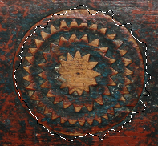

Figura 16.33. Exemplos de distorcer a seleção

Uma imagem com uma seleção

Depois de “Distorcer”
O comando“Distorcer” deforma o contorno da seleção.
Este comando tem muitas opções as quais permitem aumentar ou diminuir a deformação de suas seleções. Não há pré-visualização do resultado então terá que ser por tentativa e e erro, você terá que experimentar. (O Desfazer com Ctrl + Z funciona normalmente para restaurar a seleção)
- Limiar ou limite.
-
Um limiar muito alto encolhe a seleção distorcida. Um limiar baixo faz a seleção ficar maior.
Esta opção controla se o novo contorno é mais interno do que a seleção original ou se é mais externo que a imagem que o originou.
- Espalhar
-
Um alto índice de “Espalhar” aumenta a deformação. Esse é o valor usado para o “ o quanto espalhar”, em pixels, para o filtro ruído->espalhar que é aplicado internamente.
- Granularidade
-
Na prática, é como se o valor da “Granularidade” fosse multiplicado pelo valor de “Espalhar” para gerar a amplitude final da distorção. Quanto maior a Granularidade, mais arredondada a distorção final.
- Suavizar
-
Um alto índice de “Suavizar” diminui a deformação: esse valor é passado internamente ao filtro de desfocagem gaussiana, depois da primeira deformação usando os outros valores.
- Smooth horizontally, Smooth vertically
-
Desativar a suavização horizontal ou a Suavização vertical aumentam a deformação, fazendo com que a suavização não seja aplicada nos respectivos sentidos.